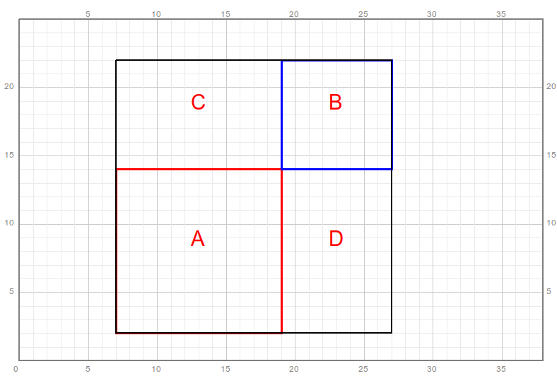

第22讲 两个数和与差的平方¶
Problem 问题描述¶
使用qianglib库提供的方法，绘制方格坐标纸，其中坐标系的原点(0,0)位于绘图区的最左下方，使用的scale值为20. Use the methods provided in the library qianglib, draw a grid coordinate system where the origin (0, 0) is at the bottom left of the coordinate system.
绘制一个边长为12各边平行于坐标轴的正方形，使得正方形左下角的顶点坐标为(7, 2)。画笔选择红色，画笔线的宽度为3。在正方形内部接近正中的位置书写一个字母”A“来表示这个正方形。 Draw a square with a side length of 12 and each side parallel to the coordinate axis; make sure that the vertex coordinates of the lower left corner of the square is (7, 2). Use”red” color and line width 3 to draw it. Write a letter “A” in the center of the square.
绘制一个新的边长为8个边平行与坐标轴的正方形，使得该正方形左下角的顶点恰好为先前绘制的正方形右上角的顶点。环比选择蓝色，画笔线宽度为3。在正方形内部接近正中的位值书写一个字母”B“来表示这个正方形。 Draw a new square whose side length is 8 and all sides parallel to the coordinate axis; make sure that the vertex of the lower left corner of the square is exactly the vertex of the upper right corner of the square previously drawn. Use”blue” color and line width 3 to draw it. Write a letter “B” in the center of the square.
绘制第三个各边平行于坐标轴的正方型，使得该正方形的左下角顶点与正方形A左下角的顶点重合，右上角顶点与正方形B右上角顶点重合。画笔选择黑色，画笔线宽度为2。Draw the third square with each side parallel to the coordinate axis; make sure that the vertex of the lower left corner of the new square coincides with the vertex of the lower left corner of square A, and the vertex of the upper right corner of the new square coincides with the vertex of the upper right corner of square B. Use color “black” and line width 2 to draw it.
第三个正方形被分割为4个部分，分别为正方形A、B、以及正方形A的上方B的左侧和正方形A的右方B的下方的剩余的两块矩形区域，记作C和D并在图上标记C，D。the Third square is divided into 4 parts: square A, B, and rectangle above A, and rectangle below B, denoted as C and D, respectively. 完成后的图形应该如下图所示： The finished figure should look like the following: 
先根据第三个正方形的边长计算该正方形的面积，记作S1。再根据这个正方形由四块区域ABCD组成，计算这四块区域的面积的和，记作S2。S1的大小和S2的大小应该相等。First calculate the area of the third square based on the side length of it, denoted as S1. Then according to this square is composed of four areas A,B,C, and D, calculate the sum of the four areas, denoted as S2. S1 should be exactly equal to S2.
尝试将正方形A和B的边长作如下每一行所示的修改，再重新计算正方形A，B以及第三个大正方形每一个顶点的位置。在计算的时候保持A的左下角坐标为(7, 2)，A的右上角与B的左下角重合，大正方形恰好把AB包含在内。然后，直接根据大正方形的边长计算其面积，记为S1；随后计算对应的正方形A、B的面积以及矩形C、D的面积的和，记为S2。把相关结果填入下表。S1应该始终与S2相等。Try to modify the side lengths of squares A and B as shown in each row below, and then calculate the coordinate values of each vertexes of squares A, B and the third large square. During calculating, keep the coordinates of the lower left corner of A always as (7, 2), the upper right corner of A coincides with the lower left corner of B, and the big square happens to include square A and B. Then calculate the area S1 directly base on the the side length of the large square; calculate S2 as sum of the area of the corresponding squares A and B and rectangles C and D. Fill in the relevant results in the table below. Note: S1 should always be equal to S2.
Side A |
Side B |
S1 |
A |
B |
C |
D |
S2 |
|---|---|---|---|---|---|---|---|
12 |
6 |
||||||
10 |
6 |
||||||
4 |
8 |
||||||
9 |
1 |
||||||
8 |
8 |
Answer Area
[1]:
from turtle import setup, reset, pu, pd, bye, left, right, fd, bk, screensize
from turtle import goto, seth, write, ht, st, home, dot, pen, speed
from qianglib import prepare_paper, draw_grid, mark, lines, line, polygon, text
[2]:
width, height = 800, 600
setup(width, height, 0, 0)
[47]:
prepare_paper(width, height, scale=20, min_x=0, min_y=0, max_y=25)
[ ]:
[ ]:
[ ]:
[ ]:
Math Background 数学背景¶
和的平方公式: \((a+b)^2 = a^2 + 2ab + b^2\)
Prerequisites 预备知识¶
无
Solution 编程求解¶
计算机小知识¶
暂缺